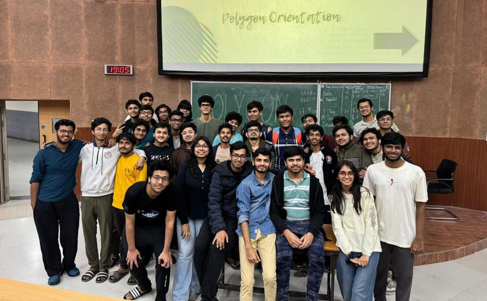

Event Highlights
Events designed to build mathematical depth, technical fluency, and problem-solving rigor

The BID-MAS Rule
An exciting auction-themed mathematics event designed to blend logical thinking, strategy, and fun activities into one engaging experience.
Inspired by the mathematical order-of-operations rule, the event challenged participants to think quickly, calculate smartly, and make strategic decisions under pressure.

Integration Bee
Integration Bee was a mathematics competition conducted through eight eliminatory rounds, where participants battled it out by solving challenging integration problems with speed and precision.
The event created an electrifying atmosphere as students showcased their quick thinking, sharp calculus skills, and competitive spirit.
The Integral Cup
Integration Bee was a mathematics competition conducted through eight eliminatory rounds, where participants battled it out by solving challenging integration problems with speed and precision.
The event created an electrifying atmosphere as students showcased their quick thinking, sharp calculus skills, and competitive spirit.
The House Edge
Integration Bee was a mathematics competition conducted through eight eliminatory rounds, where participants battled it out by solving challenging integration problems with speed and precision.
The event created an electrifying atmosphere as students showcased their quick thinking, sharp calculus skills, and competitive spirit.